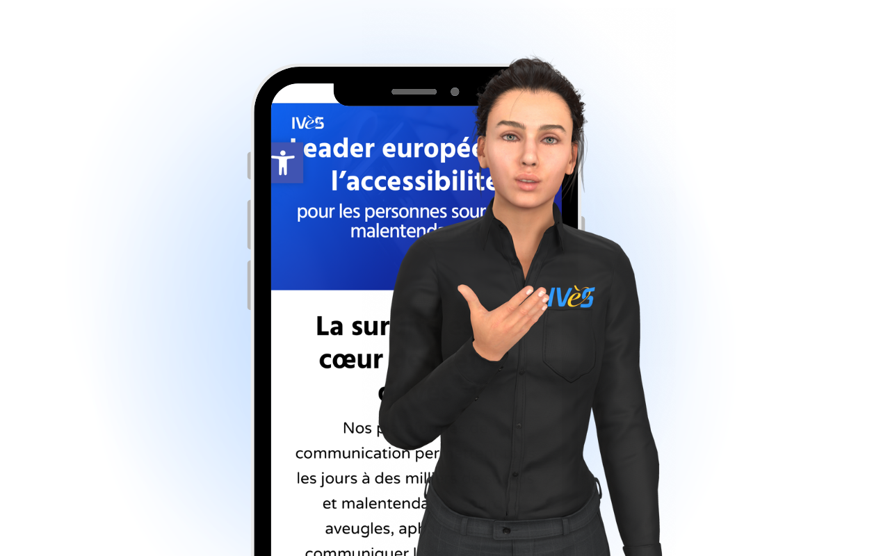
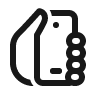
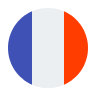
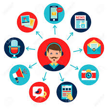
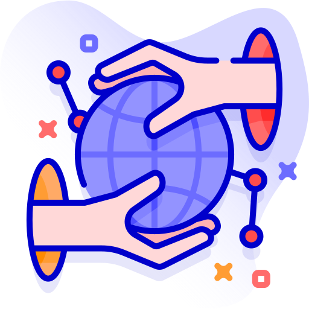
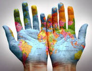

CROWD FOR SIGN
La traduction LSF EN TEMPS REEL
Decouvre notre projet fou !
Participe a ce projet unique innovant
Deja 10230E sur notre objectif de 30 000E, soyez le prochain contributeur !
Objectif de collecte : 30 000€
GESTURE GO, une application innovante pour la LSF
Grâce aux technologies 4D, CROWDFORSIGNS développe une application innovante qui permettra de révolutionner l’usage et la compréhension de la langue des signes française.
Notre objectif ? Traduire la langue des signes en temps réel grâce à l’intelligence artificielle, pour réduire les barrières de communication entre personnes sourdes et entendantes.

-

Accessible 24/24h et 7/7 sur votre smartphone
Les personnes sourdes affrontent des barrières systémiques et sociales constantes, souvent invisibles pour les entendants.
Ces difficultés peuvent être atténuées par l’accessibilité universelle, la reconnaissance pleine de la LSF, et des technologies inclusives. -
Reconnaissance de la gestuelle et des expressions
Avancée technologique majeure : la reconnaissance gestuelle grâce aux technologies adaptatives.
Un tournant dans la technologie inclusive. -
Une idée innovante financée par crowdfunding
À Strasbourg, innovation et solidarité se rencontrent.
Application française de crowdfunding digital pour projets à impact.
Accessible, locale, engagée. -

Une entreprise 100% Française
À Strasbourg, innovation et solidarité se rencontrent.
Application française de crowdfunding digital pour projets à impact.
Accessible, locale, engagée.
LES COMPLEXITES DE LA LSF
Les gestes de la LSF sont représentatifs de nos émotions, du contexte de conversation, de la disposition des mains dans l'espace, et bien d'autres facteurs qui rendent cette langue particulièrement complexe à traduire.
Les dons sont utilisés dans la recherche et le développement de l'application GestureGo.
EDUCATION
Une application qui va revolutionner la pedagogie et tous les secteurs de la communication, la sante et les administrations
Devenez acteur de l'évolution et de l'inclusion.

ACCES A LA COMMUNICATION
Les gestes de la LSF sont représentatifs de nos émotions, du contexte de conversation, de la disposition des mains dans l'espace, et bien d'autres facteurs qui rendent cette langue particulièrement complexe à traduire.
Les dons sont utilisés dans la recherche et le développement de l'application GestureGo.
SANTE ET SECURITE
les services publics et les plateformes numériques ne sont pas toujours accessibles.
Le sous-titrage est parfois absent ou incorrect, et la LSF rarement utilisée. En cas de crise (catastrophe naturelle, pandémie),
cela peut entraîner un réel danger pour les personnes sourdes, qui ne reçoivent pas les informations vitales en temps réel.

La volonte Worldwide
Accessibilité universelle : Disponible 24h/24, partout, sur un simple smartphone,
cette solution rendrait la LSF visible et reconnue dans l’espace public.
Avancée technologique majeure : La reconnaissance gestuelle en LSF est bien plus complexe que la reconnaissance vocale.
Créer une solution efficace représenterait un tournant dans la technologie inclusive.

N'Hesite plus ! Aide nous a financer GestureGo !
Un don de 100 € ne coûte réellement que 34 € après déduction fiscale ! Donner, c’est montrer un engagement sociétal,
profiter de services gratuits (formations, accès VIP…),
et participer à un projet inclusif et innovant pour les personnes en situation de handicap.
Paiement 100% sécurisé via Paypal et Stripe
ACCES A LA COMMUNICATION
Les gestes de la LSF sont représentatifs de nos émotions, du contexte de conversation, de la disposition des mains dans l'espace, et bien d'autres facteurs qui rendent cette langue particulièrement complexe à traduire.
Les dons sont utilisés dans la recherche et le développement de l'application GestureGo.
SANTE ET SECURITE
les services publics et les plateformes numériques ne sont pas toujours accessibles.
Le sous-titrage est parfois absent ou incorrect, et la LSF rarement utilisée. En cas de crise (catastrophe naturelle, pandémie),
cela peut entraîner un réel danger pour les personnes sourdes, qui ne reçoivent pas les informations vitales en temps réel.
La volonte Worldwide
Accessibilité universelle : Disponible 24h/24, partout, sur un simple smartphone,
cette solution rendrait la LSF visible et reconnue dans l’espace public.
Avancée technologique majeure : La reconnaissance gestuelle en LSF est bien plus complexe que la reconnaissance vocale.
Créer une solution efficace représenterait un tournant dans la technologie inclusive.